Man Yells at Cloud runs on any Atari 7800 with a cartridge that can hold a 144K game: an AstroCart or a 7800GD, for example. A ProLine joystick is best: you'll want both buttons.
The music is for two POKEY sound chips. With one (a 7800GD, most carts) it plays lead, bass and drums, and nothing you need is lost. The title's PROTOTYPES menu says how many it found.
Arthur is seventy-one. He wrote COBOL for thirty years and knows 6502 cold. These days he punches cards, part time, for a company called NimbusWorks, and nobody there will say what the cards are for.
In the evenings he reads the 7800 homebrew forum. Lately the new-releases board is full of hyped games with glossy promises, and every one is a broken Pong clone, posted by someone called pixelkid_07 who never answers a single reply.
Arthur tears into each one, gives it one star, and goes out on his porch to yell at the sky.
The sky listens. There is a cloud over Arthur's porch, a big patient one, and it takes everything he yells and rains it back on him until he feels better. Each night it says one thing, in the rain.
Nobody can explain the Cloud. It isn't a computer, whatever Arthur says. It just knows things: about porches, and people who sit on them alone.
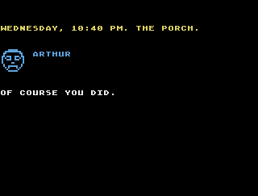
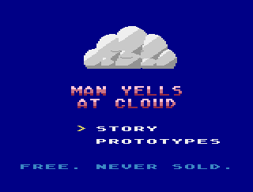
STORY is the game: a week of Arthur's life, a scene after another. PROTOTYPES lets you visit any scene on its own (left and right choose the day).
Monday, Wednesday and Friday each have three parts.
| When | Where | What you do |
|---|---|---|
| Morning | NimbusWorks | Punch the day's job onto a card and run it. |
| Evening | The forum | Read the threads, download pixelkid_07's latest, break it, review it. |
| Night | The porch | Yell at the Cloud until it rains. |
What happens on Saturday, you'll have to see.
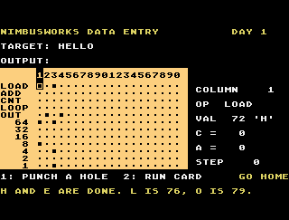
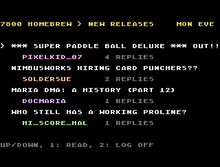
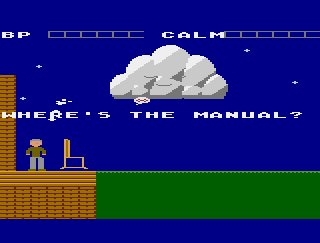
Welcome to data entry. Your card has 20 columns. Each column is one instruction, read left to right by the card reader. A column has 12 rows:
A column with no instruction punched is skipped.
The stick moves the cursor. Button 1 punches a hole, or un-punches it (we're generous). Button 2 runs the card. The panel on the right decodes the column under the cursor and shows the reader's registers.
Below the last row is GO HOME. Nobody will stop you.
The reader has two registers: A, which holds a number from 0 to 127, and the counter C.
| Row | Does |
|---|---|
LOAD n | A = n |
ADD n | A = A + n. A only goes to 127, then starts again at 0. |
CNT n | C = n |
LOOP n | C = C − 1. If C isn't 0 yet, go back to column n. |
OUT | Print A, as a letter (the chart, overleaf). |
KA-CHUNK. The reader stops if a column has two instructions punched, if a LOOP goes to a column that isn't there, or if a card runs for more than 200 steps (a loop that never ends). Fix the card and run it again.
Management says it isn't needed. They're right, as it happens: A wraps round at 128, so ADD 127 is the same as taking one away. ADD 126 takes two.
What OUT prints for each number. Numbers outside 32–95 print a ?.
The letters run in order, so once you have one, the next is ADD 1 away. The digits do too: 0 is 48.
Two letters, two columns each. The same letter twice? OUT twice: A doesn't change when it's printed.
Column 4 sends the reader back to column 3 until C runs out: four A's from four columns.
Change ADD 1 to ADD 127 and start somewhere higher, and it counts down instead.
The 7800 homebrew forum's new-releases board. Push the stick to pick a thread and button 1 to read it; up and down scroll the posts. Button 2 goes back, and on the list, logs off.
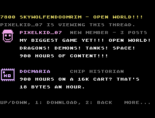
The first thread each evening is pixelkid_07's latest release. In it, button 1 downloads the game.
Read the other threads too. The regulars (SolderSue, Hi_Score_Hal, DocMaria) know things, and they don't always know they're telling you.
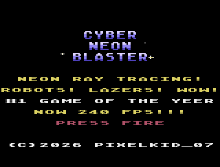
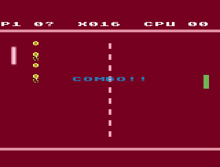
pixelkid_07's games can't be won. They can be broken, and you can't review a game until you've broken it. Each has its own way to crash, and they show the mistakes everyone makes with their first 7800 program: things in the wrong zones, scores that aren't decimal, a chip pushed past its time.
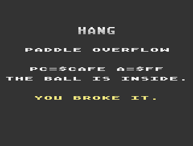
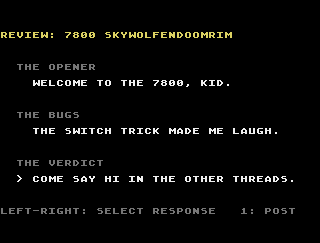
After the crash, Arthur writes his review: an opener, the bugs, a verdict. Up and down pick the line; left and right pick the words; button 1 posts it.
Arthur can only complain about bugs he actually saw. As the week goes on, kinder words turn up too. Which you pick is up to you. pixelkid_07 reads every review.
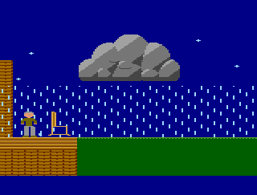
Arthur's aim swings across the sky like a metronome, in time with the music. Button 1 yells; button 2 shakes a fist. Either one, thrown as the aim crosses the Cloud, lands.
Fill CALM and the Cloud breaks, and rains, and says what it has to say. Listen to the music: the beat is the Cloud breathing.
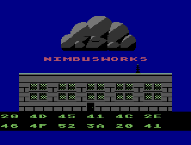
On Saturday there's a strange new thread on the forum, and the week goes somewhere new. Walk with the stick; button 1 talks, and uses whatever's in front of Arthur. The top line of the screen says what that will do.
Some things take two people. When the time comes, a friend can pick up the second joystick and press fire, and play alongside you. Alone? Arthur can ask his companion to wait or follow with button 2. Nothing ever needs two hands at once.
Man Yells at Cloud is a free game for the Atari 7800 and the people who keep it alive. It's never sold. The source is on GitHub, for anyone who wants to see how it's done, or to make something of their own.
Everyone is welcome in retrogaming. To the old hands: the next generation of homebrewers is reading your replies. To the newcomers: dumping something and vanishing isn't joining in. Stay, ask, learn, and make something with people.
Design, code and words: Jason Rowe.
Made with 7800basic (Mike Saarna), the a7800 emulator, and DASM.
Music by tools/musicgen, by way of Cosmic Arc II.
The regulars' names are placeholders. AtariAge members: yours could go here.
“Stay for the meal.”